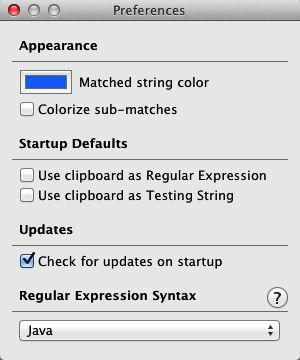
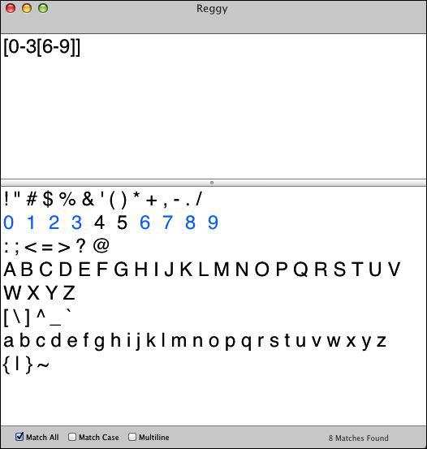
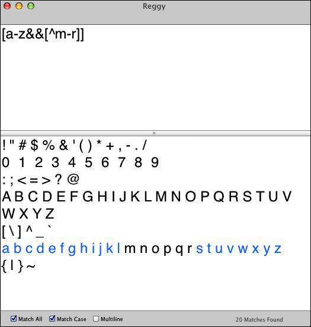

5.2 并集与差集
字符组可以像集合那样操作。事实上，字符组的另一个名称就是字符集（character set）。不是所有的实现程序都支持这项功能，但Java支持该功能。
我将展示一个叫做Reggy的Mac桌面应用程序（参见5.5节）。在其Preference（偏好设置）面板中（如图5-3所示），我将Regular Expression Syntax（正则表达式语法）改为“Java”，而在Font中（在Format里），为了阅读方便，我将字体大小设为24。

图5-3 Reggy的偏好设置
如果你想要两个字符组的并集，可以这样做：
[0-3[6-9]]
正则表达式处理器会匹配0到3之间的数字或者6到9之间的数字。图5-4展示了这在Reggy中的结果。

图5-4 Reggy中两个字符组的并集
匹配差集（实质上就是减操作）：
[a-z&&[^m-r]]
这匹配a到z之间的字符，但其中m到r之间的字符除外（如图5-5所示）。

图5-5 Reggy中两个字符组的差集